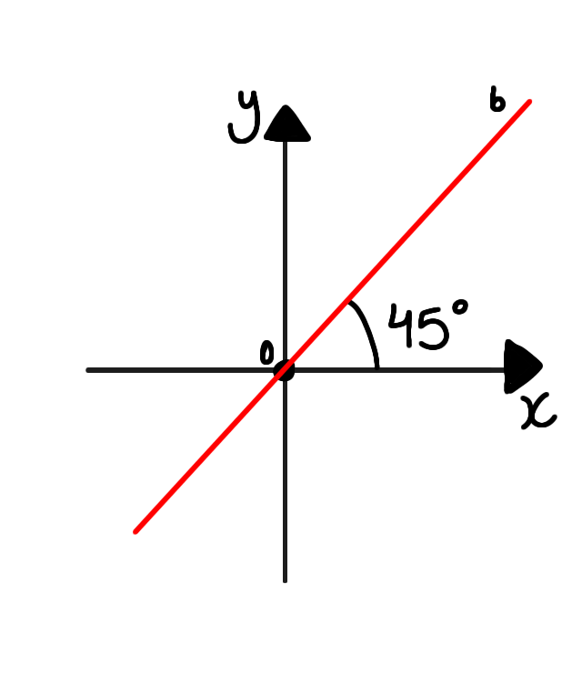
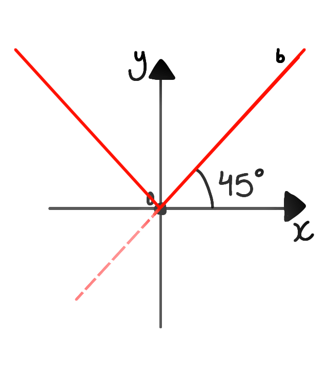

A função modular é uma função que apresenta o módulo na sua lei de formação.
De maneira mais formal, podemos definir função modular como: f(x) = |x| ou y = |x|
A função f(x) = |x| apresenta as seguintes características:
f(x) = x, se x≥ 0 ou f(x) = – x, se x < 0
Essas características decorrem da definição de módulo.
Exemplo:
f(x) = | -x |
Então vamos primeiro vamos analisar o gráfico da função acima sem a
utilização do módulo na sua lei de formação, ou seja, vamos fazer o gráfico de
f(x) = – x
O módulo presente na lei da função faz com que a parte do gráfico que se
localiza abaixo do eixo x “reflexione” no momento em que toca o eixo x.
Mas por quê? Simples, a parte do gráfico abaixo do eixo x representa os
valores negativos de y e, como o módulo de um número é sempre um valor
positivo, o gráfico de f(x) = |– x| fica:
 clique aqui para voltar